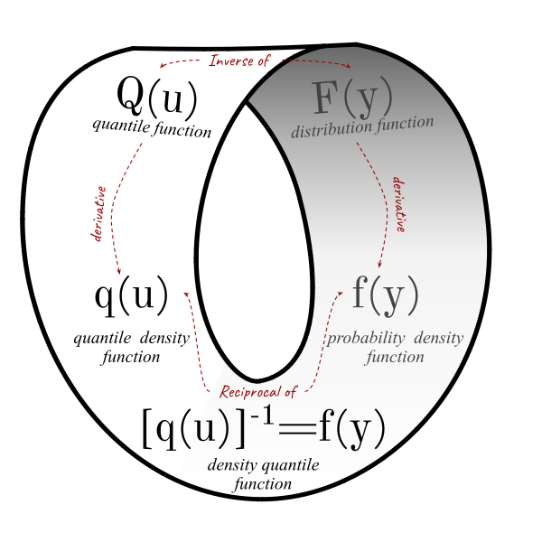
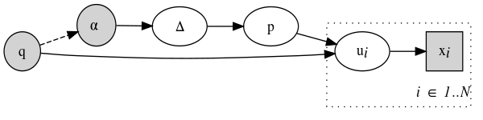

Statistical models for expert judgment in environmental decision making
A proposal document for midterm seminar.
Introduction
The objective of science is learning from evidence. This is often interpreted as the science taking the “data-driven approach”, succinctly expressed by W. Edwards Deming:
In God we trust. All others must bring data.
However, even in the midst of “big data tsunami” the scientific voices emerge arguing that, the data alone may not be enough for making valid inferences about the world (Spiegelhalter 2004). Inferences from data happen in the context of our understanding of the world drawn from the past experiences.
Bayesian statistics have long advocated that instead of making implicit assumptions, the prior knowledge must be made explicit and assured to be relevant (Clayton 2021). Bayesian statistics has risen to prominence in the recent decades, because some of the hard problems in science and policy are not being answered by the frequentist approach to data analysis (Acree 2021). The prior knowledge is embedded in the context of scientific models, which describe causal relationships representing our understanding of how the world works. Therefore, the causal models need to be made explicit through DAGs which provide the rationale for including (or omitting) variables or factors in the analysis (McElreath 2020; Pearl and Mackenzie 2018; Cinelli, Forney, and Pearl 2020).
The purpose of my PhD is to aid these two aims:
- research more effective ways of capturing the experts’ prior knowledge in the form of subjective probability distributions
- apply these techniques to inform environmental decisions through causal models
Progress
Quantile-parameterized priors and posterior passing
Bayesian inference is about updating prior beliefs in light of new evidence. The beliefs are an expression of the state of knowledge (or ignorance) of an expert in the context of a model.
The elicitation of continuous distributions for the quantity of interest often consists of eliciting a number of quantile-probability pairs (QPPs) and fitting a distribution to them (O’Hagan 2019; J. Kadane and Wolfson 1998). The distribution is selected from the predefined set of “simple and convenient” distributions with a suitable boundedness accounting for the nature of the elicited quantity (O’Hagan et al. 2006). The quantile-parameterized distributions (QPDs) represent an alternative route for selecting a distribution to characterize predictions or parameters. Because these distributions are parameterized by the QPPs, the elicited values can be used for defining the distribution directly, guaranteeing the fit and interpretability of the parameters.
In the forthcoming paper titled “Quantile-parameterized priors and posterior passing” we are looking at the variety of distributions parameterized by QPPs found in the literature (Myerson, J-QPD, SQN, Metalog) and proposing some new variants (Logit-Myerson, Sech-Myerson) to facilitate easier elicitation and updating. Distributions characterized by QPPs can be thought as the distribution approximations which can either interpolate the expert’s epistemic quantile function or regularize empirical CDF to produce a closed-form distribution which is possible to update and sample from. In order for the interpolating function to go through every point exactly, the distribution needs to have enough parameters. Quantile-parameterized distributions (QPDs) achieve it because the elicited QPPs are the parameters, so these CDF-points are always honored exactly.
The scientific knowledge is never final, and always subject to change with new data and evidence. In order to facilitate such cumulative learning, the posterior beliefs from one experiment should be taken as prior beliefs for the subsequent phases of investigation (Brand et al. 2017). However, few of the traditional distribution have enough flexibility to closely and reliable approximate posterior samples. One solution which scientists take today is to combine data from both experiments or perform the experiments independently and try to synthesize the knowledge through meta-analysis. In the second part of the paper we are looking at the efficient way of approximating the posterior samples with a highly flexible QPD for subsequent sampling.
Many QPDs are defined in terms of their quantile function and the most flexible QPDs (with the largest number of parameters), such as SQN and Metalog Distribution have a defining quantile function, which is not invertible (no respective CDF/PDF exist). Therefore, Bayesian updating for models with such distributions could be challenging.
Tenets of quantile-based inference
The traditional way of considering the distributions of random variables is through the prism of the distribution function and its derivative the probability density function. The “equally adequate representation” of the random variable can me done by the quantile function and its derivative the quantile density function. Defining a distribution via its quantile function has several advantages, including that the distributions with explicit quantile functions are easy to sample from and more complex distributions can be crafted using the simpler quantile functions as the building blocks (W. Gilchrist 2000).
Most of the knowledge and methods for Bayesian inference have been developed for the density-defined distributions. While there have been several published articles where quantile distributions were used in the context of the likelihood-free approximate Bayesian computation (Allingham, King, and Mengersen 2009), the likelihood-based application of the Bayesian inference for quantile distributions has been limited (Rayner and MacGillivray 2002; Haynes and Mengersen 2005; Nair, Sankaran, and Dileepkumar 2020).
The paper “The tenets of quantile-based inference in Bayesian models” builds on the ideas of W. Gilchrist (2000), Rayner and MacGillivray (2002), Nair, Sankaran, and Dileepkumar (2020) and systematically presents and illustrates the Bayesian inference using quantile functions. We apply the principles of quantile-based inference to Bayesian updating of parameters in the univariate and regression settings using the flexible and extensible quantile sampling distributions.
First, we briefly review the different ways of specifying a probability distribution Figure 1 and discuss several examples of the distributions defined by a quantile function, found in the literature. In the paper, we rely on the density quantile function (DQF) \([q(u)]^{-1}\), i.e. the density of a random variable expressed in terms of the cumulative distribution function (Perri and Tarsitano 2007), to define the likelihood in a Bayesian model based on a quantile sampling distribution.
Even though the quantile distributions lack the closed-form CDF \(F(y)=u\), in most cases, the depths \(u\) can be approximated by numerically inverting the \(Q(u)\). We denote the numerically inverted quantile function as \(\widehat{Q^{-1}}(y)\) or \(\widehat{F}(y)\). We propose to denote quantile distributions as \(u \overset{y}{\backsim} \text{Distribution}(\delta)\), where the back-tilde symbol with the variable name overscript \(\overset{y}{\backsim}\) should be read “inversely distributed as” to indicate that the depth \(u\) is fully determined given the value of the random variable \(Y\) and the parameterized inverse distribution function indicated to the right of the back-tilde symbol.
In this paper, we summarize the quantile function substitutions proposed by Nair, Sankaran, and Dileepkumar (2020) and implemented by Rayner and MacGillivray (2002) introducing the terms quantile-based prior and quantile-based likelihood and show the equivalence of the two ways of expressing the likelihood in Bayesian models. We then illustrate the application of the quantile-based inference the to univariate and regression models and provide code examples for models based on the quantile sampling distributions in Stan (Gabry and Češnovar 2022) and in R (R Core Team 2021). For the univariate model, we update the parameters of a bathtub-shaped Govindarajulu distribution and for the regression model, we pick the flattened skew-logistic distribution to model the error term.
The traditional approach to quantile regression introduced by Koenker (2005) is, in essence, semi-parametric, because it does not require the user “to specify the distribution of the error term as it is allowed to take any form” (Yu and Moyeed 2001). The approach we are taking is in essence the Bayesian version of the parametric quantile regression (PQR), because in this type of regression the distribution of the error term is modeled explicitly (W. Gilchrist 2008; Sharma and Chakrabarty 2020; Su 2015; Dean and King 2009; Muraleedharan, Lucas, and Guedes Soares 2016; Perri and Tarsitano 2007; Perri and Tarsitano 2008). Since in the PQR the regression equation is expressed in terms of the depth \(u\) we can extract the coherent (non-crossing) quantile regression lines for any set of fractiles.
The quantile-based inference opens up a wide set of new distributions to serve as likelihood and/or prior in Bayesian models. Besides, the flexibility offered by the distributions defined in terms of the quantile function (W. G. Gilchrist 2007), and in particular their easily extensible nature using Gilchrist’s QF transformation rules, allows ultimate freedom in expressing the expert-informed priors.
Embracing and expanding the use of quantile distributions in Bayesian analysis can enable new solutions for old problems and enrich the toolkit available to scientists for performing hard inference tasks. We hope that the quantile-based inference methods presented in this paper can contribute to expanding the body of knowledge about the use of quantile functions in Bayesian statistics and fuel further research in the area of quantile distributions.
Hybrid elicitation and quantile-parameterized likelihood
Prior distribution is an expression of expert’s understanding of the properties of the data-generative process at hand and their translation of this understanding into the language of a particular statistical model. The assumptions behind the direct, structural approach to elicitation are that the domain expert and the statistician are fully aligned on the mathematical model which can be used to represent the data-generative process, and that the domain expert has sufficient statistical expertise to translate their belief into the distribution of the parameters in such model (Winkler 1980). In case non-informative priors are used, the statistician acts as a clueless expert, having no relevant information about the prior distribution of the model parameters. Thus, prior specification is a subset of the expert knowledge elicitation in the absence of prior knowledge (Mikkola et al. 2021).
The alternative, predictive approach to specifying priors focuses on eliciting the (conditional) predictions from a domain expert and then using them to infer the distribution of the parameters for the suitable model (Winkler 1980; J. B. Kadane 1980; J. Kadane and Wolfson 1998; Akbarov 2009; Hartmann et al. 2020; Mikkola et al. 2021).
We present an example of the expert-elicited foods consumption distribution used for exposure assessment, and update it with the observations of actual consumption obtained from the food consumption database. We extracted the summary statistics from the EFSA food consumption database for the food category level 5 with few data points. We elicited the distribution of food consumption for this category using a set of quantiles, along with the expert uncertainty about the quantiles, which gets encoded into a Dirichlet distribution. We adopt the approach described by (Elfadaly and Garthwaite 2013) for assessing the hyperparameter vector of a Dirichlet distribution using the conditional univariate beta distributions. In this method the expert assesses the quartiles of the probability for each category using the symmetric percentile triplet elicitation. The resulting Dirichlet distribution can be used as a prior for the model parametrized by quantiles. Quantile-parameterized distributions (QPDs) are parameterized by a set of quantile-probability pairs (quantile-probability tuple, QPT) describing an observable (Keelin and Powley 2011). Uncertainty about the quantiles was updated using Bayesian inference (Nair, Sankaran, and Dileepkumar 2020; Perepolkin, Goodrich, and Sahlin 2021; Rayner and MacGillivray 2002). Estimates of consumption by a median and a high consumer were extracted from the posterior food consumption distribution together with uncertainty in these estimates, which can be used in exposure assessment.
The hybrid elicitation consists of two phases: elicitation of the quantile values \(q\) and elicitation of uncertainty in the cumulative probabilities associated with them (i.e. possible vectors of \(p\) which could correspond to the specified vector \(q\)). The primary goal of eliciting the vector \(q\) is to “position” the prior on the data (\(x\)) scale and provide a reasonable baseline for the follow up elicitation. In fact, the hyperparameter vector \(q\) specifies the location of the QDirichlet prior, while the hyperparameter vector \(α\) is responsible for defining its shape.

Our approach to constructing a prior distribution for the simplex Δ is similar to the method adopted by (Bürkner and Charpentier 2020) for modeling the monotonic effects in ordinal regression. The parameter vector of Dirichlet distribution combined with the vector of elicited quantiles act as hyper-parameters of the proposed QDirichlet prior, which describes the uncertainty in the parameters of the quantile-parameterized model (Figure Figure 2).
In Figure Figure 2 the prior is represented by the Dirichlet distribution with hyperparameter α specifying the uncertainty in the cumulative probabilities and a vector q representing the quantile values corresponding to the sampled cumulative probabilities. The indirect likelihood is represented by the metalog distribution which relies on depths ui given the parameterizing QPT \(\{p,q\}_n\). The depths \(u\) can be estimated using the numerical inverse of the metalog quantile function
Asking experts to provide their uncertainty about the elicited QPT is enough to quantify the uncertainty about the food consumption distribution. This approach is particularly useful when food consumption data is sparse. Parametric elicitation aims to describe epistemic uncertainty contained in the parameters of the model with the help of the experts. Predictive elicitation describes the uncertainty in the next observation without distinguishing between the randomness in the model and the lack of knowledge about the model parameters. Hybrid elicitation starts by describing the next observation using a QPT, but then pivots to characterization of uncertainty contained in the assessment of the QPT itself. This is accomplished by describing a hypothetical sample from the target population, which corresponds to cumulative probabilities. These probabilities, along with a set of quantile values, can serve as parameters in the quantile-parameterized model. Hybrid elicitation, like predictive elicitation, describes only observable quantities. At the same time, like parametric elicitation, the hybrid elicitation results in the characterization of uncertainty in the model parameters. Hybrid elicitation, therefore, can be viewed as observations-level parametric elicitation for quantile-parameterized models.
Going forward
Expert-informed adjustments to species distribution models using presence-only data
Species distribution models are often used in ecology and environmental science. However, the most widely available data to inform these models are presence-only observations collated by the volunteers into the species occurrence databases, such as GBIF. The non-random sampling nature of the presence-only data makes it impossible to estimate the species prevalence from it, without making some critical simplifying adjustments. We use the expert-elicited species absence distribution to complement the presence-only data for unbiased estimation of prevalence.
We will use expert knowledge elicitation to inform Bayesian hierarchical spatially-referenced model in order to supplement the presence-only data with expert-informed judgments to produce unbiased estimates of species distribution.
Conclusion
Using expert judgment in ecological modeling can solve some of the problems related to measurement protocols in species distribution modeling. This PhD project develops new tools for expert elicitation and incorporates the improved elicitation protocol into scientific inquiry in order to inform policy and decision making in waterfowl management.
References
Acree, Michael C. 2021. The Myth of Statistical Inference. Cham: Springer International Publishing. https://doi.org/10.1007/978-3-030-73257-8.
Akbarov, A. 2009. “Probability Elicitation: Predictive Approach.” PhD thesis, University of Salford. http://usir.salford.ac.uk/id/eprint/26502/?template=banner.
Allingham, D., R. A. R. King, and K. L. Mengersen. 2009. “Bayesian Estimation of Quantile Distributions.” Statistics and Computing 19 (2): 189–201. https://doi.org/dn3mfd.
Brand, Charlotte Olivia, James Ounsley, Daniel van der Post, and Tom Morgan. 2017. “Cumulative Science via Bayesian Posterior Passing, an Introduction.” March. https://doi.org/10.31235/osf.io/67jh7.
Bürkner, Paul-Christian, and Emmanuel Charpentier. 2020. “Modelling Monotonic Effects of Ordinal Predictors in Bayesian Regression Models.” British Journal of Mathematical and Statistical Psychology 73 (3): 420–51. https://doi.org/ggqtkh.
Cinelli, Carlos, Andrew Forney, and Judea Pearl. 2020. “A Crash Course in Good and Bad Controls.” SSRN Scholarly Paper 3689437. Rochester, NY: Social Science Research Network. https://doi.org/10.2139/ssrn.3689437.
Clayton, Aubrey. 2021. Bernoulli’s Fallacy: Statistical Illogic and the Crisis of Modern Science. New York: Columbia University Press.
Dean, Benjamin, and AR King. 2009. “Versatile Regression: Simple Regression with a Non-Normal Error Distribution.” In, 7–8.
Elfadaly, Fadlalla G., and Paul H. Garthwaite. 2013. “Eliciting Dirichlet and Connor–Mosimann Prior Distributions for Multinomial Models.” TEST 22 (4): 628–46. https://doi.org/10.1007/s11749-013-0336-4.
Gabry, Jonah, and Rok Češnovar. 2022. Cmdstanr: R Interface to ’CmdStan’. Manual.
Gilchrist, Warren. 2000. Statistical Modelling with Quantile Functions. Boca Raton: Chapman & Hall/CRC.
———. 2008. “Regression Revisited.” International Statistical Review 76 (3): 401–18. https://doi.org/10.1111/j.1751-5823.2008.00053.x.
Gilchrist, Warren G. 2007. “Modeling and Fitting Quantile Distributions and Regressions.” American Journal of Mathematical and Management Sciences 27 (3-4): 401–39. https://doi.org/gjqt4f.
Hartmann, Marcelo, Georgi Agiashvili, Paul Bürkner, and Arto Klami. 2020. “Flexible Prior Elicitation via the Prior Predictive Distribution.” http://arxiv.org/abs/2002.09868.
Haynes, Michele, and Kerrie Mengersen. 2005. “Bayesian Estimation of g-and-k Distributions Using MCMC.” Computational Statistics 20 (1): 7–30. https://doi.org/dpgjv5.
Kadane, Joseph B. 1980. “Predictive and Structural Methods for Eliciting Prior Distributions.” Bayesian Analysis in Econometrics and Statistics 18.
Kadane, Joseph, and Lara J. Wolfson. 1998. “Experiences in Elicitation.” Journal of the Royal Statistical Society: Series D (The Statistician) 47 (1): 3–19. https://doi.org/cvdn73.
Keelin, Thomas W., and Bradford W. Powley. 2011. “Quantile-Parameterized Distributions.” Decision Analysis 8 (3): 206–19. https://doi.org/10.1287/deca.1110.0213.
Koenker, Roger. 2005. Quantile Regression. Econometric Society Monographs, no. 38. Cambridge ; New York: Cambridge University Press.
McElreath, Richard. 2020. Statistical Rethinking: A Bayesian Course with Examples in r and Stan. 2nd ed. New York, NY: Chapman; Hall/CRC. https://doi.org/10.1201/9780429029608.
Mikkola, Petrus, Osvaldo A. Martin, Suyog Chandramouli, Marcelo Hartmann, Oriol Abril Pla, Owen Thomas, Henri Pesonen, et al. 2021. “Prior Knowledge Elicitation: The Past, Present, and Future.” http://arxiv.org/abs/2112.01380.
Muraleedharan, G., C. Lucas, and C. Guedes Soares. 2016. “Regression Quantile Models for Estimating Trends in Extreme Significant Wave Heights.” Ocean Engineering 118 (May): 204–15. https://doi.org/10.1016/j.oceaneng.2016.04.009.
Nair, N. Unnikrishnan, P. G. Sankaran, and M. Dileepkumar. 2020. “Bayesian Inference in Quantile Functions.” Communications in Statistics - Theory and Methods 0 (0): 1–13. https://doi.org/ghkdr4.
O’Hagan, Anthony. 2019. “Expert Knowledge Elicitation: Subjective but Scientific.” The American Statistician 73 (March): 69–81. https://doi.org/gf4jz2.
O’Hagan, Anthony, Caitlin E. Buck, Alireza Daneshkhah, J. Richard Eiser, Paul H. Garthwaite, David J. Jenkinson, Jeremy E. Oakley, and Tim Rakow. 2006. Uncertain Judgements: Eliciting Experts’ Probabilities: O’hagan/Uncertain Judgements: Eliciting Experts’ Probabilities. Chichester, UK: John Wiley & Sons, Ltd. https://doi.org/10.1002/0470033312.
Pearl, Judea, and Dana Mackenzie. 2018. The Book of Why: The New Science of Cause and Effect. New York: Basic Books.
Perepolkin, Dmytro, Benjamin Goodrich, and Ullrika Sahlin. 2021. “The Tenets of Quantile-Based Inference in Bayesian Models.” Preprint. https://osf.io/enzgs: Open Science Framework. https://doi.org/10.31219/osf.io/enzgs.
Perri, Pier Francesco, and A Tarsitano. 2008. “Distributional Least Squares Based on the Generalized Lambda Distribution.” In, 400:341–48. Physica-Verlag, A Springer Company.
Perri, Pier Francesco, and Agostino Tarsitano. 2007. “Partially Adaptive Estimation via Quantile Functions.” Communications in Statistics - Simulation and Computation 36 (2): 277–96. https://doi.org/10.1080/03610910601158369.
R Core Team. 2021. R: A Language and Environment for Statistical Computing. Manual. Vienna, Austria: R Foundation for Statistical Computing. https://www.R-project.org/.
Rayner, G. D., and H. L. MacGillivray. 2002. “Numerical Maximum Likelihood Estimation for the g-and-k and Generalized g-and-h Distributions.” Statistics and Computing 12 (1): 57–75. https://doi.org/c27574.
Sharma, Dreamlee, and Tapan Kumar Chakrabarty. 2020. “A Quantile-Based Approach to Supervised Learning.” In Applications of Machine Learning, edited by Prashant Johri, Jitendra Kumar Verma, and Sudip Paul, 321–40. Algorithms for Intelligent Systems. Singapore: Springer Singapore. https://doi.org/10.1007/978-981-15-3357-0_21.
Spiegelhalter, David J. 2004. “Incorporating Bayesian Ideas into Health-Care Evaluation.” Statistical Science 19 (1): 156–74. https://doi.org/10.1214/088342304000000080.
Su, Steve. 2015. “Flexible Parametric Quantile Regression Model.” Statistics and Computing 25 (3): 635–50. https://doi.org/10.1007/s11222-014-9457-1.
Winkler, Robert L. 1980. “Prior Information, Predictive Distributions, and Bayesian Model-Building.” Bayesian Analysis in Econometrics and Statistics. North-Holland Publishing Company, 95–109.
Yu, Keming, and Rana A. Moyeed. 2001. “Bayesian Quantile Regression.” Statistics & Probability Letters 54 (4): 437–47. https://doi.org/10.1016/S0167-7152(01)00124-9.
Citation
BibTeX citation:
@misc{perepolkin2022,
author = {Dmytro Perepolkin},
editor = {},
title = {Statistical Models for Expert Judgment in Environmental
Decision Making},
date = {2022-08-25},
url = {https://dmi3kno.github.io/LU-midterm/midterm-seminar-proposal.html},
langid = {en}
}
For attribution, please cite this work as:
Dmytro Perepolkin. 2022. “Statistical Models for Expert Judgment
in Environmental Decision Making.” Midterm Seminar
Report. https://dmi3kno.github.io/LU-midterm/midterm-seminar-proposal.html.